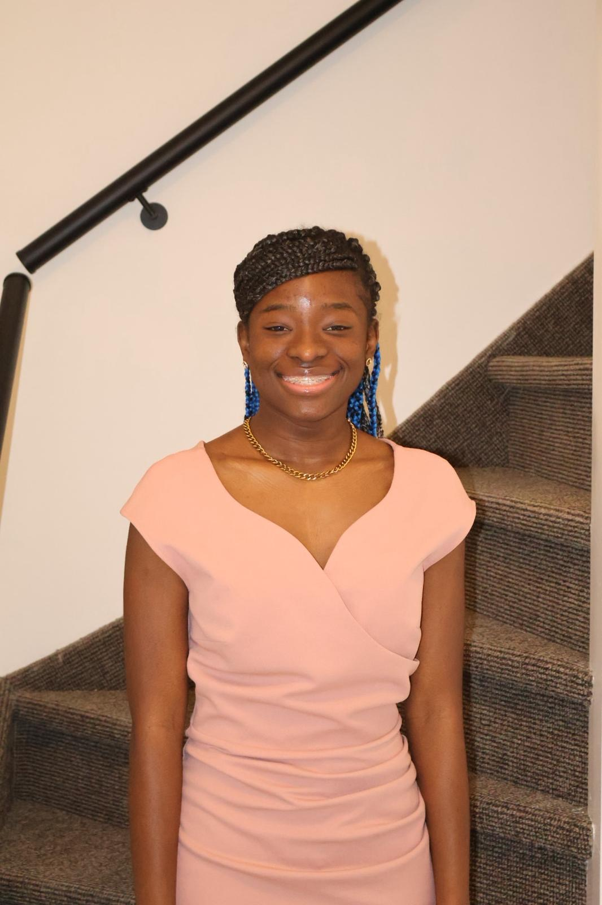
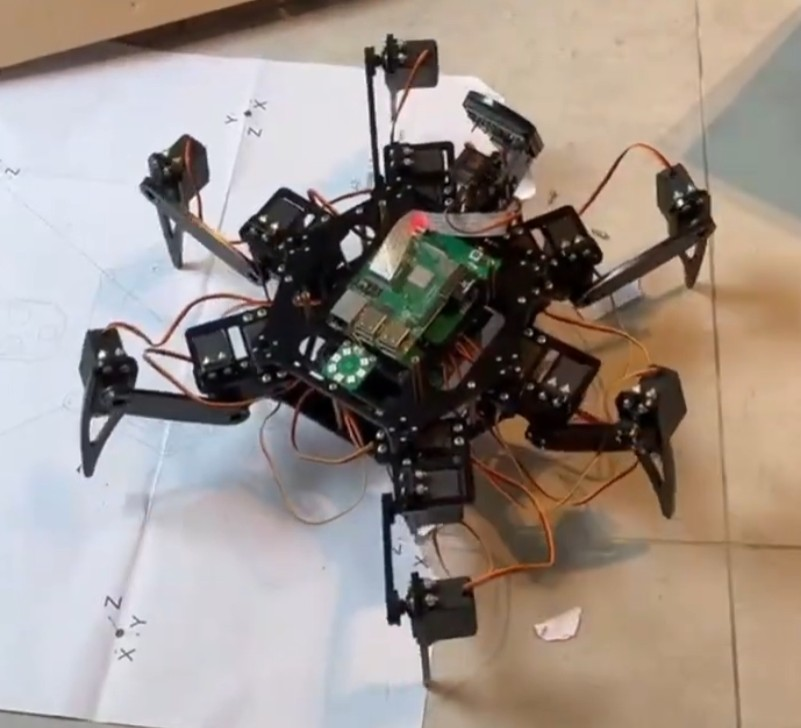

Hallo, ik ben Zain Vorswijk
Momenteel studeer ik Graduaat in Programmeren aan Thomas More in Turnhout. Mijn passie voor het bouwen van websites brengt me bij mijn volgende doel: een stage als front-end developer.

Mijn projecten
Bekijk mijn recente projecten en hoe ik ze heb ontwikkeld.

Hobby's
Lees meer over mijn hobby's en interesses.
Wie ben ik?
Mijn naam is Zain Vorswijk: 20 jaar en woonachtig in Arendonk. Momenteel studeer ik Graduaat in Programmeren aan Thomas More in Turnhout. Als sociaal persoon leer ik graag nieuwe mensen kennen. Mijn passie voor het bouwen van websites brengt me bij mijn volgende doel: een stage als front-end developer.
Geboren in Suriname, verhuisde ik op mijn achtste naar Saba, een klein eiland in het Caribisch Nederland. Daar woonde ik acht jaar lang. Op Saba is er geen hogeschool of universiteit voor mij: de enige universiteit op het eiland is bedoeld voor Amerikaanse studenten. Daarom verhuisde ik na de middelbare school naar Utrecht in Nederland, waar ik bij mijn tante ging wonen. Aan de Hogeschool Utrecht begon ik aan de opleiding Human Resource Management, maar al snel merkte ik dat deze richting niet bij mij paste. Later kwam ik naar België om een nieuwe start te maken in IT. Al deze verhuizingen hebben me geleerd om me snel aan te passen aan een nieuwe omgeving.
Waar ben ik goed in?
Ik ben een doorzetter. Mijn vrienden zeggen vaak dat ik volhardend ben: hoe lang een taak ook duurt, ik maak hem altijd af. Zo had ik een keer een examen op maandag, terwijl ik daarvoor nog al mijn oefeningen moest afwerken. Ik heb toen tot diep in de nacht doorgewerkt om alles af te krijgen en me goed voor te bereiden op het examen.
Dat doorzettingsvermogen zie je ook in Nova, de AI-assistent die ik in mijn vrije tijd heb gemaakt, geïnspireerd op Jarvis. Het moeilijkste deel was het "brein" van Nova bouwen, en ervoor zorgen dat Nova taken op mijn computer kan uitvoeren. Nova is nog niet af en werkt nog niet altijd perfect, maar ik blijf eraan werken om het programma te verbeteren.
Daarnaast kan ik goed plannen. Ik maak een planning van alles wat ik moet studeren, en ik verdeel grote taken in kleinere stukken, zodat ik sneller vooruitga. Nieuwe dingen leer ik op verschillende manieren: via YouTube, via W3Schools, en vooral door zelf dingen uit te proberen.
Waar ben ik minder goed in?
Ik vind presenteren voor een groep moeilijk, omdat ik er zenuwachtig van word. Vooral het gevoel dat iedereen naar mij kijkt, de angst om mijn tekst te vergeten en de vragen achteraf maken het lastig. Ook als er docenten in de zaal zitten, word ik extra zenuwachtig.
Toch geef ik niet op. Tijdens een presentatie aan Thomas More in Geel was ik heel zenuwachtig, maar met de steun van een klasgenoot ben ik er toch doorgekomen. Om beter te worden, bereid ik mijn presentaties altijd goed voor en oefen ik ze eerst thuis, voor de spiegel of voor een vriend. Ik merk dat het nog niet makkelijker is geworden, maar ik wil leren om vaker te presenteren, zodat ik niet elke keer zo zenuwachtig ben. Dit is iets waarin ik tijdens mijn opleiding echt wil groeien.
Mijn studies
Momenteel studeer ik Graduaat in Programmeren aan Thomas More in Turnhout. Meer over mijn opleidingen vind je op mijn CV-pagina.
Mijn hobby's
In mijn vrije tijd speel ik graag volleybal en basketbal, en spreek ik graag af met vrienden. Lees meer op mijn hobby-pagina.